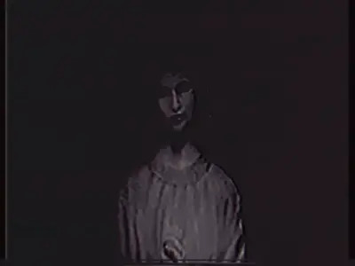

Você Está Aqui Por Uma Razão
Não foi por acaso que você encontrou este site. Você não está mais no mundo que você conhece...
O Que São Os Backrooms?
Eles estão em todos os lugares ao seu redor. Corredores infinitos, espaço sem fim... Um labirinto onde o tempo e a realidade se distorcem.
O Deus Falso Está Observando
Os deuses não são o que você imagina. Eles são mais antigos do que o tempo. E um, o Falso Deus, aguarda sua chegada.

Não Tente Escapar
Você não pode fugir. A verdade está aqui, você não pode fechar os olhos agora.